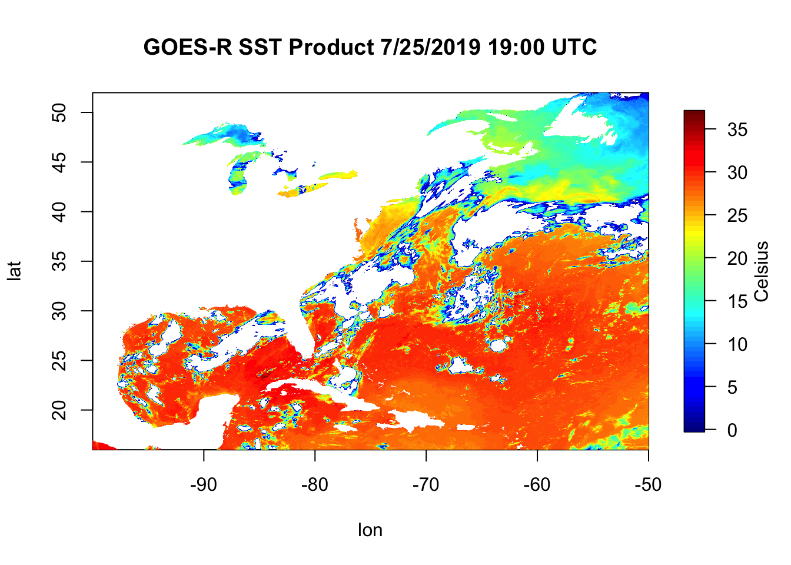

6 Scientific R Scripts
So far, the examples of R scripts we’ve shown have been general purpose scripts. For this week, we’re going to cover an example where we want to plot sea surface temperature from a given netCDF file. A netCDF file (network Common Data Format) is an advanced filetype that is incredibly efficient at storing data and heavily used in physical sciences. Within each file, metadata (time, latitude info, longitude info, projection, etc.), and variables (sea surface temperature, latitude points, longitude points, chlorophyll, etc.) can be found. The netCDF file we’ll be looking at in this example is OR_ABI-L2-SSTF-M3_G16_s20192081300453_e20192081400161_c20192081406297.nc. This is a data file from the GOES-16 (Geostationary Operational Environmental Satellite) satellite that shows a snapshot of the Northwest Atlantic Ocean and Eastern Seaboard. It’s an ugly name, but we’ll see that this complex file can be easily interpreted in R.
A scientific R Script might look like this:
# James Simkins
# Load libraries
library(ncdf4)
library(fields)
# open our ugly looking netcdf file
ncFile <- ncdf4::nc_open("~/Documents/Github/geog473-673/datasets/OR_ABI-L2-SSTF-M3_G16_s20192081300453_e20192081400161_c20192081406297.nc")
# extract SST - sea surface temperature , extract latitude, and extract longitude
sstK <- ncdf4::ncvar_get(nc=ncFile, varid="SST")
lat <- ncdf4::ncvar_get(nc=ncFile, varid="latitude")
lon <- ncdf4::ncvar_get(nc=ncFile, varid="longitude")
# convert sst from Kelvin to Celsius
sstC <- sstK - 273.15
# remove values below 0C
sstC[sstC < 0] = NA
# Plot the sstC object
fields::image.plot(x=lon, y=lat, z=sstC, legend.lab="Celsius")
title("GOES-R SST Product 7/25/2019 19:00 UTC")
6.1 Script Breakdown
Let’s slowly proceed through the script written above and build it as we go along. First and foremost of most scripts is loading the libraries we’ll be using functions from.
# Load libraries
library(ncdf4)
library(fields)In R, we need to call on packages/libraries that we want to load in. As a reminder, packages are the toolbox we want to bring into R and the functions inside each package are the tools within that specific toolbox. The library() base function loads packages. After we load a package, R will know what we mean when we call on a function from that package.
6.1.1 Installing Packages
If you just installed R for the first time, odds are you do not have ncdf4 or field libraries installed. If you need to install them, here’s how to use the install.packages() function to do so. Copy the text below and paste in your R console.
# install the ncdf4 package
install.packages("ncdf4")
# install the fields package
install.packages("fields")6.1.2 Reading the Data
# Load libraries
library(ncdf4)
library(fields)
#######################################
ncFile <- ncdf4::nc_open(filename="~/Documents/Github/geog473-673/datasets/OR_ABI-L2-SSTF-M3_G16_s20192081300453_e20192081400161_c20192081406297.nc")
sstK <- ncdf4::ncvar_get(nc=ncFile, varid="SST")
lat <- ncdf4::ncvar_get(nc=ncFile, varid="latitude")
lon <- ncdf4::ncvar_get(nc=ncFile, varid="longitude")Our object name is ncFile and it holds an opened NetCDF file. We open this file via the nc_open() function that’s within the ncdf4 library. Note the ncdf4::nc_open() syntax. Using this syntax, we explicitly tell R we wish to use the nc_open() function within (::) the ncdf4 package. This is not necessary after loading the ncdf4 package above but is still important ot know.
Notice we can use either <- or = for objects (like ncFile or sstK) but I MUST use = within the function ‘walls’ (the parantheses).
We open the netcdf file and then extract what we want out of it using ncvar_get(), which is short for “netcdf variable get”. Confused about how to use ncvar_get()? Try running help(ncvar_get) in your console.
# Load libraries
library(ncdf4)
library(fields)
ncFile <- ncdf4::nc_open(filename="~/Documents/Github/geog473-673/datasets/OR_ABI-L2-SSTF-M3_G16_s20192081300453_e20192081400161_c20192081406297.nc")
sstK <- ncdf4::ncvar_get(nc=ncFile, varid="SST")
#######################################
# convert sst from Kelvin to Celsius
sstC <- sstK - 273.15The SST variable from the netCDF file was in Kelvin and we want to convert it to Celsius. Right now, sstK is a matrix. How do I know this? Look at your environment, or simply type into your console:
# Load libraries
library(ncdf4)
library(fields)
ncFile <- ncdf4::nc_open(filename="~/Documents/Github/geog473-673/datasets/OR_ABI-L2-SSTF-M3_G16_s20192081300453_e20192081400161_c20192081406297.nc")
sstK <- ncdf4::ncvar_get(nc=ncFile, varid="SST")
#######################################
class(sstK)## [1] "matrix" "array"Class is a useful function that is loaded with the base library everytime you fire up R. It tells us what type of object we have. Now that we know this is a matrix, we can subtract 0 Celsius, or 273.15 Kelvin. When we have a matrix in R and perform any math on it, it does that math on each and every matrix value.
6.1.3 Basic Quality Control
There are bad values that crept into the dataset and we need to convert all of them to NaN (aka Not A Number…also known as NA (Not Available) in R). How do we know there are bad values in this dataset?
# Load libraries
library(ncdf4)
library(fields)
ncFile <- ncdf4::nc_open(filename="~/Documents/Github/geog473-673/datasets/OR_ABI-L2-SSTF-M3_G16_s20192081300453_e20192081400161_c20192081406297.nc")
sstK <- ncdf4::ncvar_get(nc=ncFile, varid="SST")
#######################################
summary(as.vector(sstK))## Min. 1st Qu. Median Mean 3rd Qu. Max. NA's
## -999.0 286.9 300.0 278.2 302.0 310.0 2175822summary() is another great base function. In order to use it on a matrix, we need to convert it to a vector - summary can’t do 2 dimensional objects like matrices, it needs a one dimensional vector of numbers. Notice the Min in the summary output. -999? No way is that a valid Kelvin value, especially since we subtract another 273.15 to this number to make the the Celsius matrix. So clearly we have some bad data that we need to convert to NA’s. We do this by…
library(ncdf4)
library(fields)
ncFile <- ncdf4::nc_open("~/Documents/Github/geog473-673/datasets/OR_ABI-L2-SSTF-M3_G16_s20192081300453_e20192081400161_c20192081406297.nc")
sstK <- ncdf4::ncvar_get(nc=ncFile, varid="SST")
lat <- ncdf4::ncvar_get(nc=ncFile, varid="latitude")
lon <- ncdf4::ncvar_get(nc=ncFile, varid="longitude")
# convert sst from Kelvin to Celsius
sstC <- sstK - 273.15
#######################################
# remove values below 0C
sstC[sstC < 0] = NAThis line reads as: sstC where sstC is less than 0 equals NA. The brackets here can be thought of as the ‘condition’, that is what you’re looking to change. This is called a vector operation, which we will get more into later but these are important becuase it’s far faster to do this than a for loop.
library(ncdf4)
library(fields)
ncFile <- ncdf4::nc_open("~/Documents/Github/geog473-673/datasets/OR_ABI-L2-SSTF-M3_G16_s20192081300453_e20192081400161_c20192081406297.nc")
sstK <- ncdf4::ncvar_get(nc=ncFile, varid="SST")
lat <- ncdf4::ncvar_get(nc=ncFile, varid="latitude")
lon <- ncdf4::ncvar_get(nc=ncFile, varid="longitude")
# convert sst from Kelvin to Celsius
sstC <- sstK - 273.15
# remove values below 0C
#######################################
sstC[sstC < 0] = NA
summary(as.vector(sstC))## Min. 1st Qu. Median Mean 3rd Qu. Max. NA's
## 0.0 19.8 27.6 24.1 29.0 36.8 26798196.1.4 Plotting the Data
Now we see that our summary looks good (even though we’re looking at a matrix in celsius now). So all that’s left to do is plot this up…
# James Simkins
# Load libraries
library(ncdf4)
library(fields)
ncFile <- ncdf4::nc_open("~/Documents/Github/geog473-673/datasets/OR_ABI-L2-SSTF-M3_G16_s20192081300453_e20192081400161_c20192081406297.nc")
sstK <- ncdf4::ncvar_get(nc=ncFile, varid="SST")
lat <- ncdf4::ncvar_get(nc=ncFile, varid="latitude")
lon <- ncdf4::ncvar_get(nc=ncFile, varid="longitude")
# convert sst from Kelvin to Celsius
sstC <- sstK - 273.15
# remove values below 0C
sstC[sstC < 0] = NA
#######################################
# Plot the matrix
fields::image.plot(x=lon, y=lat, z=sstC, legend.lab="Celsius")
title("GOES-R SST Product 7/25/2019 19:00 UTC")Now we plot this up using the image.plot() function from the fields library. image.plot() takes the arguments x, y, and z. This is a 2 dimensional dataset of Sea Surface Temperature where the x is longitude, the y is latitude, and what we plot within the box (z) is sstC. Notice that for this kind of plot, the ‘title()’ function is a separate function rather than an argument that goes inside of image.plot(). Remember, if you’re ever confused about something like this just tell R you need ‘help()’.
6.2 In Class Exercise
- Go to https://github.com/jsimkins2/geog473-673/tree/master/datasets
- Download ‘OR_ABI-L2-SSTF-M3_G16_s20192081300453_e20192081400161_c20192081406297.nc’
- Make simple plot of the
DQF(Data Quality Flag) variable
-Hint: You may have to use install.packages() to install pacakages you may not have yet on your machine.
Aim for something like this:

6.2.1 Further Explanation of DataTypes
If you look into your environment from the in class exercise, you’ll notice under the ‘Data’ tab you have a large matrix of the DQF values. R stores these matrices without the column/row identifier (aka lat & lon). We provide the image.plot() function with the lon & lat arrays becuase it doesn’t know what the x & y coordinates are of the matrix. Notice that the environment tells you the dimensions - the matrix is 2778 x 1989. R is indexed from 1 to the length of the dimension. Here is what I mean:
dim(sstC)is2778 1989dim(lat)is1989lat[0]isnumeric(0)lat[1]is16.00283lat[1989]is51.98563lat[1990]isNA
The above tests are referred to as indexing. The 1st point of the lat array is 16.00283. In R, we index using brackets []. If you want to find more values other than just a single point, the procedure is referred to as indexing/slicing/subsetting.
is
``` 16.00283 16.02093 16.03903 16.05713 16.07523 16.09333 16.11143 16.12953 16.14763 16.16573```
The lat object we've been exploring here is an 'array'.
An array is a vector with one or more dimensions. So, an array with one dimension is (almost) the same as a vector. An array with two dimensions is (almost) the same as a matrix. An array with three or more dimensions is an n-dimensional array.
A vector is what is called an array in all other programming languages except R — a collection of cells with a fixed size where all cells hold the same type (integers or characters or reals or whatever).
<!--chapter:end:Week2_RSyntaxClassesDatatypes.Rmd-->
# Time Series Data
This week we'll look at some Time-Series data from DEOS. Delaware has the highest concentration of environmental monitoring stations in the country thanks to DEOS (Delaware Environmental Observing System) which is controlled by University of Delaware's CEMA (Center for Environmental Monitoring and Analysis). The data collected using this dense network is useful for a variety of purposes. Before we dive into the data, let's cover an important skill - the for loop.
## For Loops
For loops & conditional statements are a key skill in programming. They allow you to process through large datasets or multiple datasets thus minimizing the amount of manual work you need to do. The basic for loop looks like this...
```r
# Generate sequence of numbers from 1 to 10 using the seq() function (seq for sequence)
numbersList = seq(from=1,to=10,by=1)
# Multiply each number in the numbersList by 8 and print the result
for (i in numbersList){
temNumber = i * 8
print(temNumber)
}## [1] 8
## [1] 16
## [1] 24
## [1] 32
## [1] 40
## [1] 48
## [1] 56
## [1] 64
## [1] 72
## [1] 80Notice the general structure of R for loops. for signals to R you’re beginning a for loop, which requires the general structure to look like:
for (something in something inside these parentheses){ do something within these curly brackets }
Yes, you must have these parentheses and curly brackets present and surrounding the appropriate code. If you forget a parentheses or curly bracket you’ll have errors pop up…this happens to advanced programmers all the time, so don’t be discouraged if it takes time getting used to this.
The general structure is always: for(condition){do something}. If statements are set up the same way
# Generate sequence of numbers from 1 to 10 using the seq() function (seq for sequence)
numbersList = seq(from=1,to=10,by=1)
# Multiply each number in the numbersList by 8 and print the result
for (i in numbersList){
if (i==4){
temNumber = i * 8
print(temNumber)
}
}## [1] 32This is referred to as a nested loop, because there is a conditional statement within another one. Key takeaway here: in programming languages, = is an assignment (i.e. x = 4), whereas == is an equality test (i == 4). To put this loop in layman’s terms: for i in numbersList, if i is equal to 4, multiply i by 8 and then print temNumber.
We can also have nested for loops.
# Generate sequence of numbers from 1 to 3 this time using the seq() function (seq for sequence)
numbersList = seq(from=1,to=3,by=1)
lettersList = list("A", "B", "C")
for (num in numbersList){
for (let in lettersList){
print(c(num,let))
}
}## [1] "1" "A"
## [1] "1" "B"
## [1] "1" "C"
## [1] "2" "A"
## [1] "2" "B"
## [1] "2" "C"
## [1] "3" "A"
## [1] "3" "B"
## [1] "3" "C"You can name the object within the list whatever you want (i, j, num, let, etc.). Also, c() is the concatenate function that combines values into a vector or list. The order doesn’t matter in this for loop…
# Generate sequence of numbers from 1 to 3 this time using the seq() function (seq for sequence)
numbersList = seq(from=1,to=3,by=1)
lettersList = list("A", "B", "C")
for (let in lettersList){
for (num in numbersList){
print(c(num,let))
}
}## [1] "1" "A"
## [1] "2" "A"
## [1] "3" "A"
## [1] "1" "B"
## [1] "2" "B"
## [1] "3" "B"
## [1] "1" "C"
## [1] "2" "C"
## [1] "3" "C"But it does in this one…
# Generate sequence of numbers from 1 to 10 using the seq() function (seq for sequence)
numbersList = seq(from=1,to=10,by=1)
# Multiply each number in the numbersList by 8 and print the result
if (i==4){
for (i in numbersList){
temNumber = i * 8
print(temNumber)
}
}Here’s one more example for multi conditional statement with an else…
# Generate sequence of numbers from 1 to 3 this time using the seq() function (seq for sequence)
numbersList = seq(from=1,to=3,by=1)
lettersList = list("A", "B", "C")
for (num in numbersList){
for (let in lettersList){
if (num == 3 && let == "B"){
print(c(num,let))
} else{
print("Not what we want")
}
}
}## [1] "Not what we want"
## [1] "Not what we want"
## [1] "Not what we want"
## [1] "Not what we want"
## [1] "Not what we want"
## [1] "Not what we want"
## [1] "Not what we want"
## [1] "3" "B"
## [1] "Not what we want"&& means “and” … || means “or”…these are useful in multi conditional statements. The else statement is an appendage of the if statement. It basically means if num == 3 and let == B is false, print "not what we want". Notice that the ‘else’ statement is outside of the if statement but immediately after it.
In Class Exercise: debug this for loop
soiltype <- list("sand", "silt", "saline", "clay", "peat")
permeability <- c(0.09, 0.05, 0.03, 0.01, 0.005)
for (s in seq(length(soiltype)){
print(a)
for (p in permeability)
if (p == 0.05 | p == 0.005){
print(permeability[s])
}
}
}And get this output…
## [1] 1
## [1] 0.09
## [1] 0.09
## [1] 2
## [1] 0.05
## [1] 0.05
## [1] 3
## [1] 0.03
## [1] 0.03
## [1] 4
## [1] 0.01
## [1] 0.01
## [1] 5
## [1] 0.005
## [1] 0.0056.3 DEOS Data
The dataset we’ll be using is named - DEOS.csv . It contains a variety of meteorological variables collected at 5 minute intervals. Let’s dive into the coded example.
Note: When we load the file, your path might look something like this:
Downloads/geog473-673/datasets/DEOS.csv
Remember, we need to tell R where we stored the file we want to open. We can use getwd() to see where R is looking right now. From there, we can tell it to look in Downloads, or Documents, or Desktop, etc.
# load the data using read.csv()
deos_data <- read.csv("../datasets/DEOS.csv", header = TRUE, skip=0, stringsAsFactors = FALSE)
# view the top few rows of data using the head() function
head(deos_data)## Timestamp..UTC. Air.Temperature.deg..C. Dew.Point.Temperature.deg..C.
## 1 2014-04-04 04:05 7.1 4.3
## 2 2014-04-04 04:10 6.9 4.3
## 3 2014-04-04 04:15 6.8 4.3
## 4 2014-04-04 04:20 6.7 4.4
## 5 2014-04-04 04:25 6.6 4.4
## 6 2014-04-04 04:30 6.6 4.4
## Wind.Speed.m.sec. Wind.Direction.deg.. Barometric.Pressure..
## 1 3.7 351.7 NA
## 2 3.5 352.9 NA
## 3 3.9 357.5 NA
## 4 3.9 356.8 NA
## 5 3.3 5.5 NA
## 6 2.7 18.4 NA
## Solar.Radiation.UNKNOWN. Wind.Gust.Speed..5..m.sec.
## 1 0 5.1
## 2 0 5.8
## 3 0 6.2
## 4 0 5.9
## 5 0 4.9
## 6 0 3.5
## Gage.Precipitation..5..mm.
## 1 0.00
## 2 0.00
## 3 0.25
## 4 0.00
## 5 0.00
## 6 0.00# view summary of the data
summary(deos_data)## Timestamp..UTC. Air.Temperature.deg..C. Dew.Point.Temperature.deg..C.
## Length:182645 Min. :-51.0 Min. :-53.300
## Class :character 1st Qu.: 7.6 1st Qu.: 2.200
## Mode :character Median : 15.2 Median : 10.200
## Mean : 14.1 Mean : 8.505
## 3rd Qu.: 21.2 3rd Qu.: 16.200
## Max. : 37.0 Max. : 25.500
## Wind.Speed.m.sec. Wind.Direction.deg.. Barometric.Pressure..
## Min. : 0.100 Min. : 0.0 Mode:logical
## 1st Qu.: 1.800 1st Qu.: 99.3 NA's:182645
## Median : 2.600 Median :202.2
## Mean : 2.997 Mean :187.0
## 3rd Qu.: 3.700 3rd Qu.:258.9
## Max. :16.700 Max. :360.0
## Solar.Radiation.UNKNOWN. Wind.Gust.Speed..5..m.sec. Gage.Precipitation..5..mm.
## Min. : 0.0 Min. : 0.100 Min. :0.00000
## 1st Qu.: 0.0 1st Qu.: 2.900 1st Qu.:0.00000
## Median : 4.0 Median : 4.400 Median :0.00000
## Mean : 192.7 Mean : 4.907 Mean :0.01354
## 3rd Qu.: 313.0 3rd Qu.: 6.400 3rd Qu.:0.00000
## Max. :1335.0 Max. :24.400 Max. :9.65000# view variable names
colnames(deos_data)## [1] "Timestamp..UTC." "Air.Temperature.deg..C."
## [3] "Dew.Point.Temperature.deg..C." "Wind.Speed.m.sec."
## [5] "Wind.Direction.deg.." "Barometric.Pressure.."
## [7] "Solar.Radiation.UNKNOWN." "Wind.Gust.Speed..5..m.sec."
## [9] "Gage.Precipitation..5..mm."#the variable names look wonky because they have spaces in them - spaces in variable names is a big no-no
#change the names to something more readable
names(deos_data) = c("datetime", "air_temperature", "dewpoint", "windspeed", "winddirection", "pressure", "solar_radiation", "wind_gust", "precipitation")
# print the first datetime value
deos_data$datetime[1]## [1] "2014-04-04 04:05"# view the class of the first date index
class(deos_data$datetime)## [1] "character"# give it a datetime class, notice the format
deos_data$datetime = as.POSIXct(deos_data$datetime, format = '%Y-%m-%d %H:%M')
# subset the data using the which.min() and which.max() functions to find our indices
low_ind = which.min(deos_data$datetime < "2014-04-04 00:00:00")
upper_ind = which.max(deos_data$datetime > "2015-04-04 23:59")
# plot the dataset by indexing it between teh low_ind and upper_ind
plot(deos_data$datetime[low_ind:upper_ind], deos_data$air_temperature[low_ind:upper_ind], type = "l", col = 'red',
xlab = paste0(deos_data$datetime[low_ind], " to ", deos_data$datetime[upper_ind]), ylab = "Celsius")
# add a title to the plot
title("1 Year Air Temperature at Station")
#subset the data using the subset function this time
subDeos = subset(deos_data, deos_data$datetime >= "2014-07-04 00:00:00" & deos_data$datetime <= "2014-07-11 23:59:00")
# Now add dewpoint to that plot
plot(x = subDeos$datetime, y = subDeos$air_temperature, type = "l", col = 'red', xlab = paste0(subDeos$datetime[1], " to ", subDeos$datetime[length(subDeos$datetime)]), ylab = "Celsius", ylim = c(5,40))
# add "lines" to the plot, in this case we want our line to be the dewpoint
lines(x = subDeos$datetime, y = subDeos$dewpoint, col = 'yellow')
legend('bottomright', legend=c('Air Temp', 'Dew Pt'), col = c('red', 'yellow'), lty = c(1, 1))
title("Air Temperature & Dew Point Temperature")
6.4 Assignment
- Subset dataset to January 2015 only
- Convert Wind Speed & Wind Gust data from m/s to mph
- Plot wind speed and wind gust on same plot - wind gust as points first, then wind speed as a line second
- Hint: you’ll have to use an argument of
type = "p"for wind gust.
- Add legend
- Compute correlation coefficient between wind gust and wind speed using
cor()function - add to title of plot - Deliver Resulting Plot to Canvas assignment week3
Aim for something like this (does not have to be exact)…